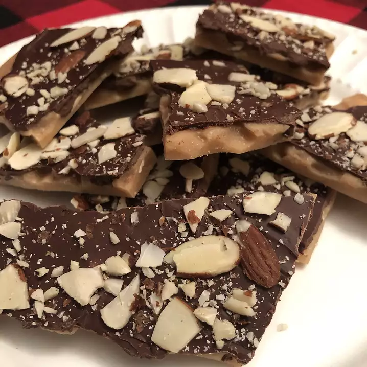

English Toffee

Description
This candy tastes wonderful and takes about 15 minutes to make. I use a cast iron skillet and some times just a few of the almonds to help gauge the readiness.
Ingredients
- 1 cup butter
- 2 tablespoons water
- ¼ cup slivered almonds
- 1 cup chocolate chips
Steps
- Butter a 10x15 inch jellyroll pan.
- Melt butter in a heavy skillet over medium heat. Stir in sugar and water. Bring to a boil and add almonds. Cook, stirring constantly until nuts are toasted and the sugar is golden. Pour the mixture into the prepared pan; do not spread.
- Immediately sprinkle the chocolate chips on top. Let stand for a minute, then spread the chocolate over the top. Let cool completely, then break into pieces.